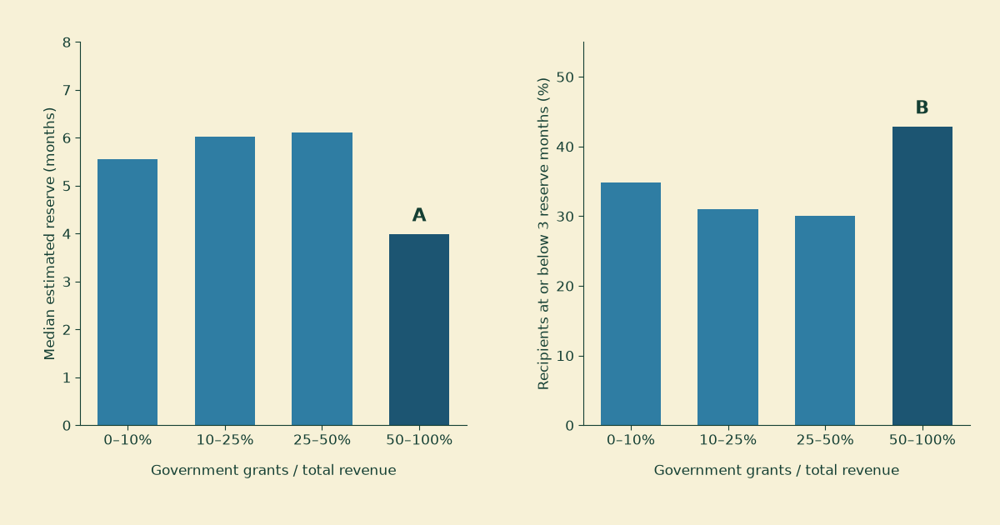
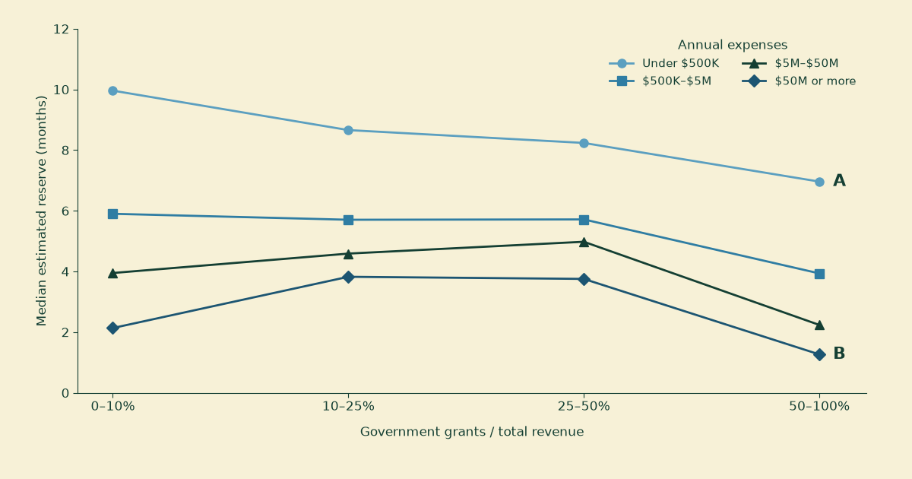

When the funding stops: government grants and the reserves behind them
A charity has three months of reserves. Its government funding stops. How long can it keep going?
Three months is only one possible answer. If government grants pay half the bills and the other half of the revenue keeps arriving, those reserves might bridge six months of the resulting gap. If the money counted as reserves cannot be spent, or the organization was already losing money, the answer could be much shorter. The reserve number needs a funding number beside it.
Our last post asked where government grants go. The reserve series asked how much financial cushion charities carry. Here we put the two questions on the same filing: do charities more dependent on government grants have enough reserves to absorb a disruption?
The historical data answers a narrower question. In our cut of 68,957 grant-receiving charities, the group getting more than half its revenue from government grants has a median estimated reserve of 4.0 months, against about 6.0–6.1 months in the two middle groups. It has the lowest median within each of four expense-size bands, too. But the pattern is not a steady decline with every increase in grant dependence, and these are tax-year-2023 balance sheets, not a reading of organizations’ finances today.
First, a different file
The IRS annual extract behind our earlier reserve posts does not contain the government-grant line. The published IRS tables used in the last post contain that line, but only as aggregates. Neither source can tell us whether the same organization has both high grant dependence and thin reserves.
For this post we use the National Center for Charitable Statistics’ processed
electronic filings, version
efile_v2_1, for tax year 2023. We join the header, revenue, expense, and
balance-sheet tables by filing identifier and EIN together. Revenue from one
return never gets paired with reserves from another year. Urban Institute has
already published research and an open workflow on government-funding
risk; this is our own
reserve-focused cut of the underlying filing data, not a replication of its
sample or a claim that the question is new.
We keep the latest submitted full Form 990 per EIN, then require a 501(c)(3) filing with an address in the 50 states or DC, a full-year reporting period, and no group or partial-return flag. Of 244,821 matched filings at that point, 80,444 report positive government grants. Further checks require positive revenue and expenses, grants no larger than total revenue, and usable net-asset accounts. The final 68,957 are a filtered set of grant recipients, with no population weights. They exclude 990-EZ and 990-N filers, organizations reporting no grants, and recipients that fail our accounting checks.
Our measure of grant dependence is government grants divided by total revenue: Part VIII, line 1e divided by line 12. As the Form 990 instructions explain, line 1e includes grants from multiple levels of government. It does not identify the federal share, and it does not capture every government payment. Payments reported as program-service revenue sit elsewhere. A small number on line 1e therefore cannot establish that a charity has little exposure to public funding.
The difference is at the high-dependence end
Figure 1 compares estimated reserves across four grant-dependence bands. Each charity counts once, regardless of size. Table 1 gives the underlying counts.

Figure 1. Estimated reserves among our tax-year-2023 grant recipients, grouped by government grants as a percentage of total revenue. A marks the 3.98-month median among recipients above 50 percent dependence. B marks the 42.8 percent of that group at or below three reserve months, including nonpositive reserves. Bands include their upper boundary and exclude their lower boundary; the first contains positive shares through 10 percent, not zero.
| Government grants / revenue | Charities | Median reserve months | At or below 3 months |
|---|---|---|---|
| Above 0%, through 10% | 20,905 | 5.6 | 34.9% |
| Above 10%, through 25% | 12,233 | 6.0 | 31.0% |
| Above 25%, through 50% | 11,636 | 6.1 | 30.1% |
| Above 50%, through 100% | 24,183 | 4.0 | 42.8% |
Table 1. Counts and organization-weighted reserve statistics behind Figure 1. The last column includes negative and zero values; it does not count charities observed to run out of money.
The middle bands have slightly more cushion than the lowest one. The clearest separation is between those middle groups and recipients drawing a majority of their revenue from government grants. 10,351 of the 24,183 charities in that last group have at most three months by this reserve calculation.
This does not show that government grants caused thin reserves. Different services, reimbursement arrangements, property holdings, and funding histories could produce both the revenue mix and the balance sheet. We have not separated those explanations here.
Size accounts for some of the differences, but does not erase the last group’s position. Figure 2 repeats the comparison within four annual-expense bands. In each, recipients above 50 percent dependence have the lowest median reserve. Among charities spending $5 million to under $50 million a year, for example, their median is 2.2 months, compared with 5.0 months in the 25–50 percent grant band. Broad size bands are only a partial comparison; they do not match organizations by mission or operating model.

Figure 2. The same grant-dependence bands, separated by annual total expenses. Connecting lines guide the eye between categories; they do not track charities over time. A marks the 6.96-month median for 7,585 majority-grant recipients spending under $500,000. B marks the 1.26-month median for 473 such recipients spending at least $50 million. Expense bands include their lower boundary and exclude their upper boundary.
What we are calling a reserve
We carry forward the series’ estimated expendable-reserve proxy: net assets without donor restrictions, minus net land, buildings, and equipment, plus secured mortgages and notes payable. Divide that amount by one-twelfth of annual expenses less depreciation, depletion, and amortization.
On the 2023 Form 990, those are Part X lines 27, 10c, and 23, and Part IX lines 25 and 22. The accounting check is Part X line 27 plus line 28 against line 32, within $1,000. We also require the filer to mark that it follows FASB ASC 958.
This estimate is not a bank balance. Some assets without donor restrictions are illiquid or designated by the board. The form does not establish that every dollar of secured debt finances the property we subtract. Nor does subtracting depreciation turn the expense statement into a cash-flow statement: in-kind expenses, working-capital movements, capital spending, and debt principal still matter.
Two alternative calculations help show how much the comparison depends on the formula. Adding tax-exempt bonds back as well moves the majority-grant group’s median from 4.0 to 4.1 months; omitting the secured-debt add-back lowers it to 2.9 months. Its median remains below both middle groups either way. Cash plus savings and temporary cash investments, divided by the same expense denominator, gives 3.5 months, versus 4.7 and 4.9 in the middle bands. That balance may include restricted money, so it is a separate check, not a substitute for spendable cash.
Missing fields matter more. We never replace missing government grants, total revenue, total expenses, unrestricted net assets, or total net assets with zero. For omitted component fields, such as depreciation or secured debt, the main calculation assumes zero and records each substitution. Requiring every component to be explicitly present leaves just 3,030 filings. In that selected subset, the high-dependence median is 2.4 months, still below the middle groups’ 4.5 and 4.8, but essentially equal to the lowest-dependence group. The broad comparison with the middle groups survives this check; the precise levels and the comparison with the lowest group do not.
A funding loss needs its own denominator
Reserve months divide the cushion by the entire expense base. A disruption requires comparing it with the gap left after remaining revenue.
For a deliberately simple illustration, suppose a charity has $1.2 million in annual expenses after the depreciation adjustment, $1.2 million in revenue, $600,000 in government grants, and $300,000 in usable reserves. Its ordinary reserve ratio is three months. Losing all $600,000 of grants would leave a $50,000 monthly gap, giving six months of coverage. Losing half the grants would leave a $25,000 monthly gap, giving twelve. These are assumed figures, not a particular organization’s results.
We can apply that arithmetic to the filings as a static stress test. Hold all other revenue and expenses fixed. Subtract a chosen fraction of government grants from revenue. Where the remaining revenue falls below expenses less depreciation, divide the estimated reserve by that monthly shortfall.
With no grant loss, 6.8 percent of our sample already combines a shortfall with at most three months of estimated coverage. Removing half of grant revenue raises that share to 15.1 percent; removing all of it raises it to 20.6 percent. The last figure is 14,181 filings: 7,078 already have a nonpositive reserve proxy, while 7,103 have a positive proxy insufficient to cover more than three months of the modeled gap. Including the starting deficits prevents us from attributing every stressed filing to the hypothetical cut.
These are not predicted failure rates. The exercise assumes revenue recognition tracks usable receipts, retains restricted and noncash revenue in the total, ignores timing and credit access, and allows no spending adjustment or new fundraising. It also removes grants from all levels of government together. A temporary payment delay, a canceled award, and a permanent cut have different cash consequences; this annual arithmetic cannot distinguish them.
What the two numbers can tell us
The useful result in this cut is the conjunction: the group with the highest reported government-grant dependence also has less estimated cushion than the middle groups. That pattern is visible within broad size categories and under several reserve definitions. It is a reason to ask more specific questions, with current accounts in hand.
For a charity facing an actual disruption, those questions are about which payments stopped, how much cash is available for that purpose, what bills fall due before the next receipt, and what services can continue while the gap is bridged. The noprofits.org search tool and ProPublica Nonprofit Explorer can help locate the historical filing. The answer about next month’s payroll has to come from more recent information.
The analysis script, chart script, and source hashes, results, and reproduction notes make our cut inspectable. If we have mapped a field incorrectly or selected a misleading population, we would like to hear it. After the reconciliation post, that invitation belongs next to the result.
This is historical public-data analysis, not financial advice or a forecast of any charity’s survival; the reserve estimates and stress scenarios depend on the filters and assumptions described above.